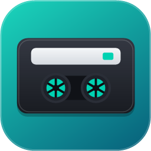

Your library
Songs, albums, artists and playlists, with ratings and play counts. A player with a 10-band equalizer, for the iPod or your PC.

Your click-wheel iPod on Windows, without iTunes. Copy music, videos and photos on and off, make playlists, pick the cover art.
Songs, albums, artists and playlists, with ratings and play counts. A player with a 10-band equalizer, for the iPod or your PC.
Drag music, videos, photos or whole folders onto the window. Formats the iPod can't play are converted, duplicates are skipped.
It backs up the iPod's database before every change, checks the result and rolls back if anything doesn't match.
Also: cover art on the iPod's screen · lyrics on the iPod · Cover Flow · tag editor · a Windows 95 look · English and Hungarian
Click-wheel models that show up as a drive. Every one can be read; writing depends on how Apple signed its database.
| iPod | Signature | Add music |
|---|---|---|
| 1G–5G, photo, mini, nano 1G / 2G | none | Yes |
| Classic, nano 3G / 4G | hash58 | Yes, after Read device ID |
| nano 5G and later | hash72 / hashAB | Read only |
Windows SmartScreen may warn, because Mixtape isn't signed: More info › Run anyway. Back up your iPod before the first write. Problems? See Troubleshooting.